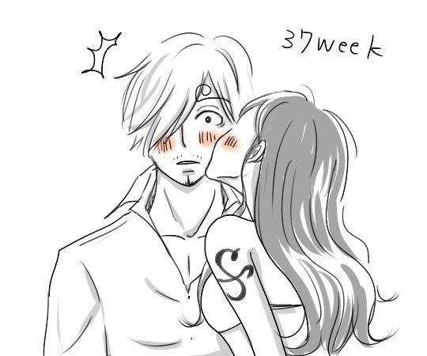
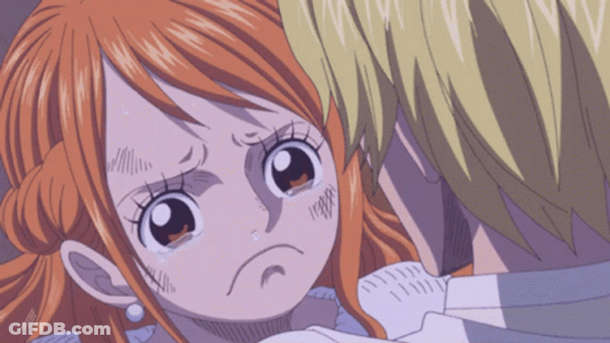

Sanji tinha ficado muito tempo fora do bando, passando por problemas os quais ele queria resolver sozinho, por conta disso acabou pulando do barco. Depois de um tempo, os problemas se solucionaram, e quando Sanji voltou para o barco e disse Estou de volta
Nami foi correndo abraçá-lo, chorando de felicidade no processo.